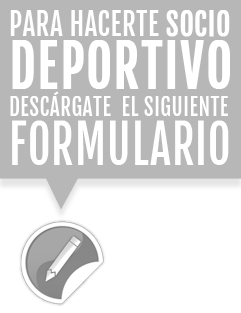

.png)
Docencia
Desde un aspecto lúdico y deportivo, pretendemos fomentar la formación de nuestros jinetes y amazonas para conseguir una correcta equitación y de este modo poder acceder a la disciplina que mejor se adapte a sus necesidades. Ofrecemos clases de todos los niveles a partir de 5 años. A niveles generales, ofrecemos enseñanza tanto en clases individuales como en grupo. Para enseñanza específica, preparamos para la obtención de galopes. Para un caballo educado y obediente, domamos y entrenamos su caballo con todas las herramientas que la enseñanza ecuestre pone a nuestra disposición
EL CLUB
Descripción y filosofía
El 31 de Julio de 1907 se constituye la Sociedad de Concursos de Hípica de Almería, origen del actual Club Hípico y Polideportivo Almería. Desde 1971, fecha en la que se funda como tal el Club Hípico Almería, ha heredado el espíritu de sus antecesores consolidando la actividad con una eficaz labor durante estas décadas, disponiendo de unas magníficas instalaciones, remodeladas en 2005, con motivo de los XV Juegos Mediterráneos. Desde sus inicios, el Club no ha dejado de celebrar de forma asidua concursos de todas las disciplinas hípicas, siendo el más antiguo y tradicional el Concurso de Saltos Ciudad de Almería. 02_d La relación del Club Hípico Almería con la Federación Andaluza de Hípica (FAH) y con la Real Federación Hípica Española, ha hecho posible que en sus instalaciones se hayan impartido Cursos de Monitores Territoriales de Equitación, Equitación de Base a través de FEBA, y de Técnicos Deportivos de Equitación. El Club dispone de medios, instalaciones y profesorado, cualificados para la docencia cumpliendo con la Ley del Deporte, estando federado y homologado por la Federación Andaluza de Hípica otorgándose la calificación de Centro Hípico de Tres Estribos.
Infraestructura
El Club Hípico y Polideportivo de Almería, homologado por la federación Hípica Andaluza con la categoría de Tres Estribos, se sitúa en las afueras de la capital, cuenta con una superficie de más de 60.000 metros cuadrados y fue completamente remodelado para los XV Juegos Mediterráneos Almería 2005.Pistas
*Pista de competición Toubin & Clement con torre de iluminación.
*Dos pistas de calentamiento Toubin & Clement con torre de iluminación.
*Una pista de competición sílice y geotextil con torre de iluminación.
*Una pista cubierta para calentamiento de 1000m2 iluminada.
*Cuatro picaderos para dar cuerda.
Instalaciones complementarias
*88 Cuadras fijas.
*Espacio libre para 200 boxes portátiles de 3x3m con equipación de agua potable y luz.
*Clínica veterinaria con potro para curas.
*Cuadras de aislamiento.
*Oficina con puerta independiente y bajo llave para guardar documentación y posibles muestras biológicas para control de doping.
*Seis duchas simultáneas con manguera superior y pistolas regulables.
*Caminador para caballos.
*Tienda de hípica.
*Zona de desinfección y desinsectación de vehículos.
*Aparcamientos individuales para coches, camiones y vanes.
Hazte socio
Ahora, en el Club Hípico Almería te facilitamos desde nuestra web, los formularios por los cuales podrás hacerte Socio Propietario y Socio Deportivo. Para ello, tendrás que descargarte el formulario que estimes más oportuno para ti, imprimirlo, rellenar los datos que en él se plasman, y mandárnoslo por correo con la documentación que en el mismo se solicite a la siguiente dirección de correo: info@clubhipicoalmeria.es
